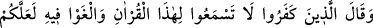
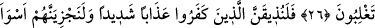
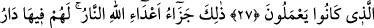
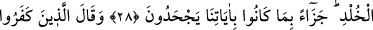
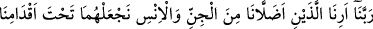
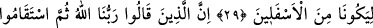
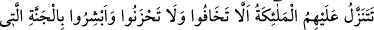
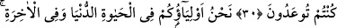
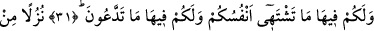
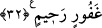

ALLAH DÜŞMANLARININ
CEZASI, ATEŞTİR
26. İnkâr edenler: Bu Kur’an’ı dinlemeyin, okunurken gürültü yapın. Umulur ki
bastırırsınız, dediler.
27. O inkâr edenlere şiddetli bir azâbı tattıracağız ve onları yaptıklarının en
kötüsüyle cezalandıracağız.
28. İşte bu Allah düşmanlarının cezası, ateştir. Âyetlerimizi inkâr etmelerinden
dolayı, orada onlara ceza olarak ebedî kalacakları yurt (cehennem) vardır.
29. Kâfirler cehennemde: Rabbimiz! Cinlerden ve insanlardan bizi saptıranları
bize göster de aşağılanmışlardan olsunlar diye onları ayaklarımızın altına alalım!
diyecekler.
30. Şüphesiz, Rabbimiz Allah’tır deyip, sonra dosdoğru yolda yürüyenlerin
üzerine melekler iner. Onlara: Korkmayın, üzülmeyin, size vâdolunan cennetle
sevinin! derler.
31. Biz dünya hayatında da, âhirette de sizin dostlarınızız. Orada sizin için
canlarınızın çektiği her şey var ve istediğiniz her şey orada sizin için hazırdır.
32. Gafûr ve rahîm olan Allah’ın ikramı olarak
“İnkâr edenler” yani müşriklerin liderleri, halka ve eşkıyâ takımına yahut
birbirlerine “Bu Kur’an’ı dinlemeyin, okunurken gürültü yapın…” bu şekilde o terk
edilir; dinleyen dinlemeye muktedir olamaz.